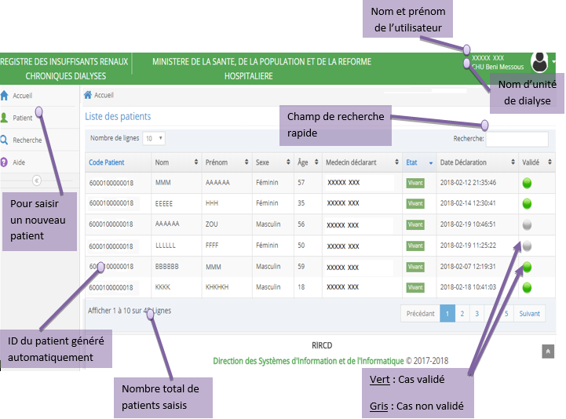
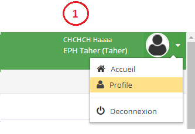
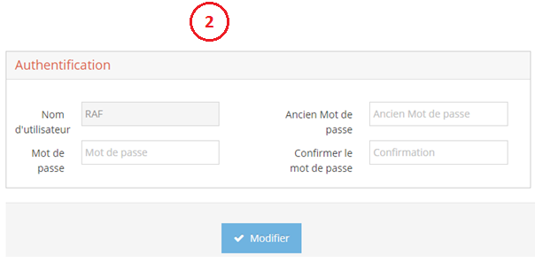
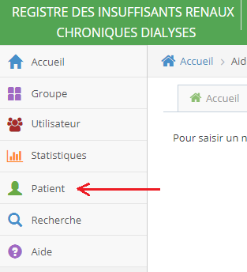
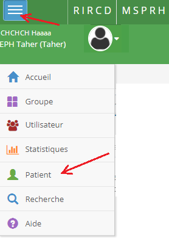
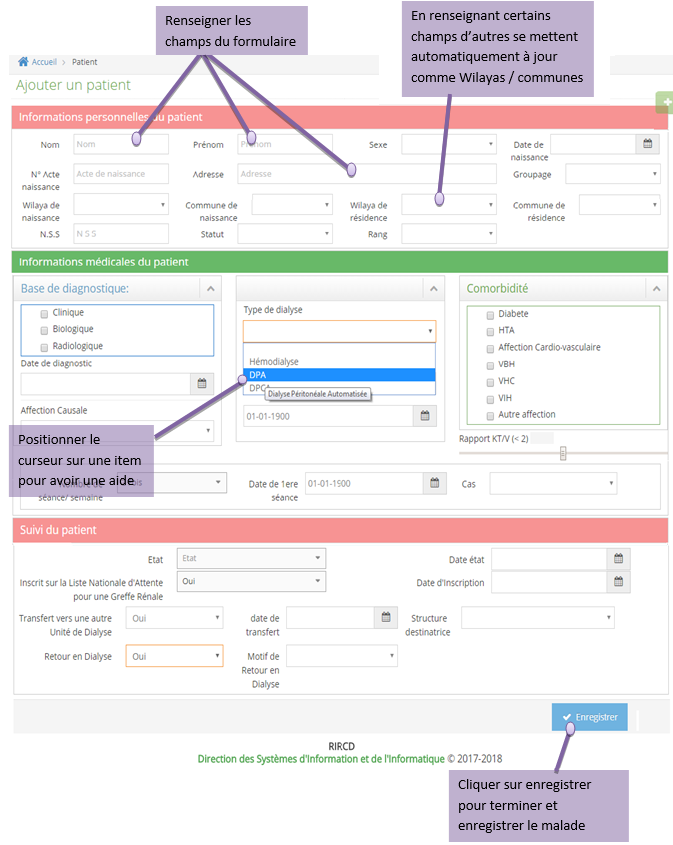

Pour changer le mot de passe, il suffit de:
- En haut à droit cliquer sur l'icon
- Choisir « Profile »
- Remplire les champs
- Cliquer sur le bouton « Modifier »
Pour saisir un nouveau cas, aller dans le menu gauche et cliquer sur « Patient ».

Ou

Remplire le formulaire et cliquer sur « Enregistrer ».
